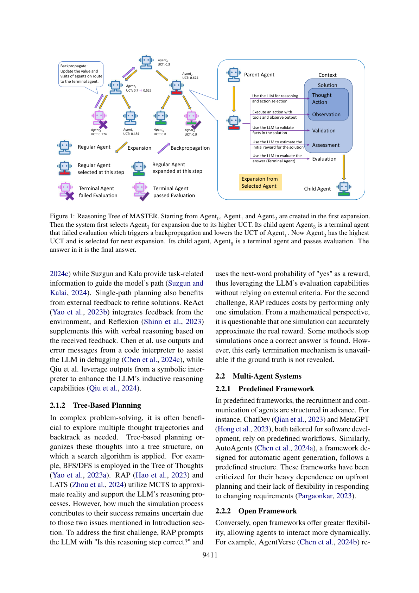

用 LLM 自我评估取代 MCTS 的模拟步骤，并以专用 MCTS 指导智能体的招募与通信，按任务复杂度动态伸缩
大语言模型（LLM）正日益被用于求解任务，但其战略规划能力常受质疑。近期研究引入蒙特卡洛树搜索（MCTS）以增强 LLM 的规划能力。尽管有潜力，MCTS 依赖大量采样模拟来近似真实奖励分布，带来两大问题：其一，MCTS 在围棋等任务上可通过模拟得到客观奖励（赢 1 输 0），但在问答等任务中模拟结果是答案本身，若无真值便无法得到客观奖励；其二，获得统计显著的奖励估计通常需超过 30 次模拟，导致过高的 token 与时间消耗。为此，我们提出 MASTER（Multi-Agent System with Tactical Execution and Reasoning using LLM Specialized MCTS）——一个通过 LLM 专用 MCTS 协调智能体招募与通信的新框架。它依据任务复杂度自主调整智能体数量，并保证它们之间聚焦的通信。跨任务的综合实验证明了框架的有效性：在 HotpotQA 达 76%、WebShop 达 80% 准确率，刷新了这两个数据集的 SOTA。
LLM 基于上下文的「下一个 token 概率」生成文本，但有效推理需要立足数据与现实、基于逻辑第一性原理的严谨演绎。为增强规划能力，近期研究引入 MCTS——它通过模拟评估动作的长期后果并反向传播聚合奖励，在利用与探索间取得平衡。然而现有工作用 MCTS 面临两大挑战：(1) 依赖外部环境客观标准获取模拟奖励，而问答等任务无真值时不可用；(2) 需大量模拟以获得统计显著奖励，因时间/token 成本而难以为继。针对挑战一，有方法用真值比对得奖励，但在解题中泄露真值并不合理；针对挑战二，有方法限制模拟次数或一旦得正确答便终止，但若真值未公开则早停不可行。
这些问题凸显 MCTS 的关键步骤——模拟——的局限，使 MCTS 适用范围受限、与 LLM 不甚兼容。因此我们提出面向 LLM 场景的 MCTS 改编：去掉模拟过程，依靠 LLM 自我评估能力分配奖励，并提出多种提升奖励客观性的方法：(1) 在自我评估前增加一步让 LLM 提供更多上下文；(2) 将 LLM 的置信度作为奖励权重以调节其影响；(3) 保留反向传播机制，以便初始分配有误时更新奖励。传统 MCTS 将资源集中在模拟上以近似现实，我们的方法将资源分布于多个步骤以共同保障奖励的准确性与客观性——这正是命名 MASTER 的缘由（它用一系列精妙设计「掌控」了 MCTS 的核心模拟步骤）。
本文另一贡献是新型多智能体系统。现有框架有两类：开放式通信灵活但易因幻觉跑题、耗尽 token 窗口；人工预定义通信可控但缺乏代码复用、无法适配不同难度任务。MASTER 用 LLM 专用 MCTS 指导智能体的创建与交互：子智能体基于父智能体输出响应与构建，使招募与通信更可控高效；按任务复杂度动态伸缩智能体数量；智能体任务无关，任务切换时无需重配置。主要贡献：(1) 提出 MASTER 多智能体框架（新招募流程 + 基于 MCTS 的通信协议）；(2) 提出适配 LLM 的改进 MCTS，适用于环境无客观反馈的任务；(3) 在 HotpotQA/WebShop/MBPP 上达 76%/80%/91%，刷新 SOTA。
2.1 规划过程。 单路径规划（Few-Shot、CoT、ReAct、Reflexion 等）一次只走一条轨迹；树基规划（ToT 用 BFS/DFS、RAP 与 LATS 用 MCTS）组织为树结构。RAP 用「该推理步是否正确」的 yes 概率作奖励，仅做 1 次模拟——从数学上看单次模拟能否近似真实奖励存疑；早停机制在真值未公开时不可用。2.2 多智能体系统。 预定义框架（ChatDev、MetaGPT、AutoAgents）依赖固定流程、灵活性差；开放式框架（AgentVerse、CAMEL、AutoGen）灵活但需自主系统调节通信以免交换无关信息。
MCTS 常用于围棋等，通过大量模拟获得各动作平均奖励，用 UCT 偏向高潜力动作、分配更多模拟。其四步为：选择（按 UCT 选节点）、扩展（加子节点）、模拟（拓展至任务完成）、反向传播（用模拟奖励更新节点平均奖励）。
MASTER 中推理树、选择、扩展、反向传播与 MCTS 类似，但去掉了模拟步骤，代之以三个特殊机制获取奖励：自我评估前提供更多上下文、在改进 UCT 公式中纳入 LLM 置信度、在反向传播中更新奖励。给定任务后，系统用问题初始化根智能体，提示 LLM 生成反思当前推理轨迹的文本（Thought）与解决问题的动作（Action），以 temperature=0.6 鼓励多样性；智能体用工具执行动作得到反馈（Observation）；三者构成 Solution。随后 LLM 验证 Solution 中关键事实（Validation，temperature=0.0 保稳定），并基于 Solution 与 Validation 评估解题进度，给出分数与置信度（Assessment）；分数即初始奖励，三者构成 Context 存入记忆。

子智能体以相同流程创建，附加父智能体 Context 以延续解题。子智能体数量（分支数，Number of Branches）为超参数；扩展上限（Maximum of Expansion）近似解题所需步数，达上限仍未满意则提交最高奖励终节点之解。生成最终答案（而非中间步）的智能体称终节点（Terminal Agent）；仅对终节点执行 Evaluation（LLM 评估正确性），通过则作为最终答案、任务结束，否则触发反向传播，用该奖励更新根路径上所有智能体。
原 UCT 源于 Hoeffding 不等式，$UCT=Q_i+\sqrt{\frac{\ln N_i}{2n_i}}$，其中 $Q_i=\frac{1}{n_i}\sum_{n=1}^{n_i}r_n$。在我们的系统中，$Q_i$ 由两部分组成：初始奖励 $r_0$（生成时从 Assessment 抽取）与更新奖励（反向传播奖励均值，类式 2）。受奖励控制变量研究启发，改为式 3：
其中 $r_0$ 为 LLM 给的初始奖励，$c_0$ 为其置信度。原 MCTS 依赖大量模拟使估计准确，当 $n_i$ 小时不可靠；我们的 $Q$ 额外含初始奖励（初始奖励与更新奖励的加权和，以置信度为权重）——置信度高时更新奖励权重 $(1-c_0)$ 低、影响小，置信度低时更新奖励主导。此外 $n_i$（反向传播次数）按问题自动适配：复杂任务需更多尝试，简单任务首次即得可接受结果、无需反向传播，从而早停省 token。RAP/LATS 用探索常数 $\lambda$ 取代 $1/\sqrt{2}$；我们用 $1/(10\sqrt{2c_0})$ 作探索权重，使探索项反映该智能体的不确定性（置信度低则不确定性高、需更多探索），且因 $n_i$ 远小于原 MCTS、对数初段陡峭，探索项占主导需此权重调控；当 $c_0=0.1$ 时探索权重恰为 $1/\sqrt{2}$。最终公式：
三个机制保障奖励可靠：(1) Assessment 前先 Validation，让 LLM 评论当前解事实正确性并加入 Assessment 提示，使评分更稳定可靠；(2) Assessment 同时给分数与置信度，置信度在改进 UCT 中起双重作用——置信度低则降低该分数影响、增加被选作进一步探索的概率；(3) 保留反向传播：任一终节点 Evaluation 失败时触发，降低其路径 Q 值，允许初始奖励不准时调整。
为验证通用性，在问答（HotpotQA）、决策（WebShop）、编程（MBPP）三类任务上实验，并做消融与参数研究。HotpotQA 用 Distractor 设置（混合相关/无关段落）；WebShop 模拟电商环境按匹配度衡量成功；MBPP 需生成并通过测试用例的代码。基线：GPT-4（Few-shot CoT，单轮无法解决需多轮交互的任务，故 HotpotQA/WebShop 上其表现等同 ReAct 的实验条件）、ReAct、Reflexion、LATS、MetaGPT、AgentVerse（仅 MBPP），以及各数据集 SOTA（Beam Retrieval / AgentKit / AgentCoder）。每个数据集随机取 100 题、同随机种子、重复 3 次取均值。
MASTER 刷新多任务 SOTA：HotpotQA 76.0%（超 Beam Retrieval 73.3%）、WebShop 80.0%（超 AgentKit 70.2%）、MBPP 91.0%（接近 AgentCoder 91.8%）。
去掉模拟并引入早停后，MASTER 比其它基于 MCTS 的树方法更高效。与 LATS 对比：同 100 道 HotpotQA 题，LATS 平均 185,392 token/题，MASTER 仅 10,937 token/题（约 6%），且性能更优。
UCT 修改（表 2）：完整公式（初始+更新奖励加权和，探索权重受置信度影响）最佳；固定探索权重（式 6）在 2/3 数据集上反而更差——印证探索项应受置信度动态调控；仅用加权和（式 7）优于仅初始奖励（式 8）；MBPP 上各变体无显著差异（因测试用例结果客观，$c_0$ 趋近 1 时各设置趋同）。
智能体设计（表 3）：去掉 Validation 或 Assessment 性能大幅下降——Validation 深刻影响作为 MCTS 核心的奖励分配；去掉 Assessment 时随机赋初始奖励，性能几乎仅依赖 LLM 自身。
本文提出 MASTER——一个利用专用 MCTS 增强 LLM 规划能力的新型多智能体系统框架。我们面向 LLM 优化的 MCTS 将 MCTS 的适用面拓宽到更多任务且成本更低；并用该算法指导智能体招募与通信协议，引入了多智能体系统的创新形态。跨数据集的广泛实验证明 MASTER 相较现有框架的有效性与高效性。
框架高度依赖 LLM 对当前推理状态提供准确分数与置信度评估的能力——GPT-4 表现良好，但较小的开源模型在此步可能遇困。此外，用户须配置部分超参数（扩展上限、分支数），其最优值随具体任务而异。